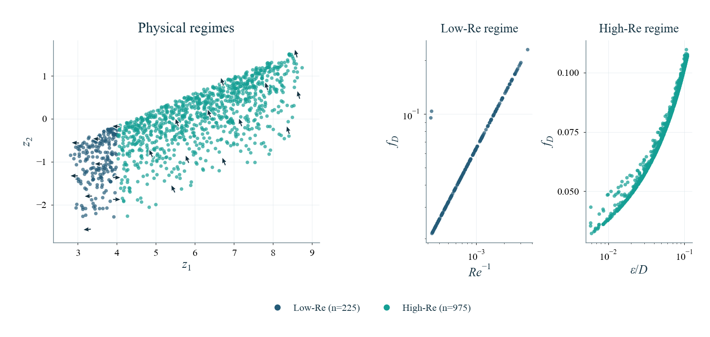

Viscous flow in a rough circular pipe

Numerical results
| Scope | Samples | Groups | MI | ε | Test R² |
|---|---|---|---|---|---|
| Regime 0 | 975 | 1 | 2.198 | 0.111 | 0.984 |
| Regime 1 | 225 | 1 | 3.085 | 0.046 | 0.974 |
Selected relations
Regime 0
Input 1(epsilon) / (D)
Outputf_D
Regime 1
Input 1(mu) / (rho · D · U)
Outputf_D